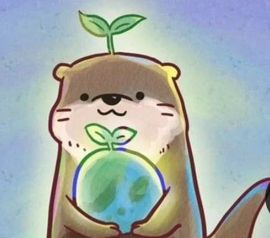

🌱
Sostenibilidad
Cada producto es rigurosamente evaluado para certificar que su ciclo de vida respete la biodiversidad del planeta.

EcoMarket nació con la firme convicción de que pequeños cambios diarios generan un impacto global masivo. Comenzamos como un proyecto local enfocado en educar sobre alternativas al plástico, y hoy nos enorgullece proveer alternativas sustentables certificadas a cientos de hogares.
Trabajamos de la mano con productores locales, asegurando un comercio justo y una huella de carbono mínima en toda nuestra cadena de distribución.
Cada producto es rigurosamente evaluado para certificar que su ciclo de vida respete la biodiversidad del planeta.
Apoyamos directamente a familias artesanas y agricultores independientes pagando precios honestos sin intermediarios.
Tanto nuestros productos como empaques finales están libres de polímeros derivados del petróleo.